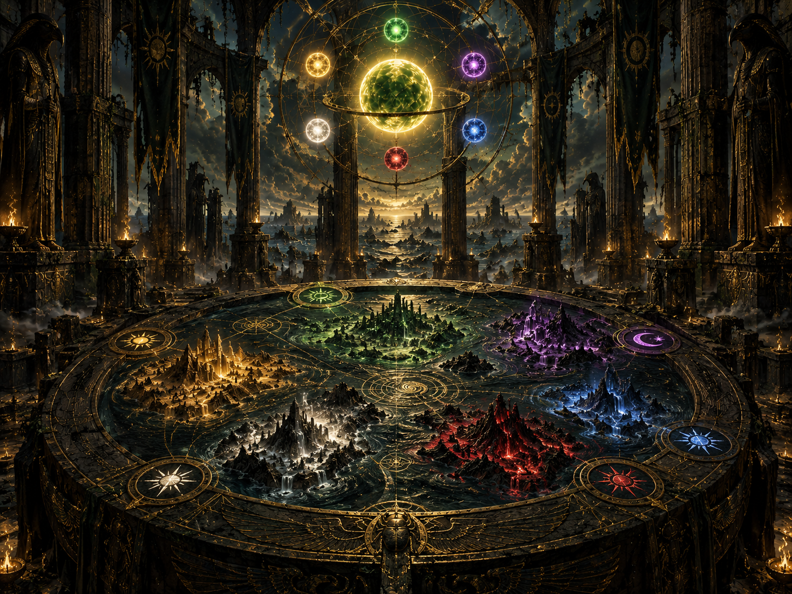

Solaris
The land beneath the Green Sun.
The World Behind the Story
Before the children beneath the roots, there were six distant lands beneath six different suns. Before the Oasis became home, five worlds had already fallen.
The Infinite Sea
Across the endless waters of Tyghara stand six distant lands, each born beneath a sun of its own. Their shores lie so far apart that no people can stand upon their coast and see the light of another world. For countless ages, each land grew beneath a different sky—shaping its people, its bloodlines, its traditions, and the histories they believed belonged to them alone.
Between them stretches an ocean without known end, vast enough to turn kingdoms into rumors and neighboring peoples into legend. Green. Purple. Gold. White. Red. Blue. Six lights burning over six civilizations that once believed the horizon marked the edge of everything they would ever know.

The peoples of Tyghara were not born as one nation, nor did they share one beginning. Each civilization rose beneath its own sun, separated from the others by an impossible breadth of dark water. Generations lived and died believing their homeland stood alone beneath the heavens.
Over ages, the light above each land left its mark. Bodies changed. Bloodlines adapted. Customs hardened into identity. Languages, legends, rivalries, and ways of survival grew beneath skies no other people had ever seen.
To cross the Infinite Sea was to abandon everything known. Few had reason to attempt it. Fewer still believed another world waited beyond the horizon.
That certainty ended when the first sun fell.
The land beneath the Green Sun.
The land beneath the Purple Sun.
The land beneath the Golden Sun.
The land beneath the White Sun.
The land beneath the Red Sun.
The land beneath the Blue Sun.
The History That Was Buried
Long ago, something dark began moving across the Infinite Sea. What remained in memory would one day survive only in fragments—as warnings, half-remembered stories, and whispers of something that followed the light itself.
The first great catastrophe began beneath the Red Sun. Volero fell, and those who escaped were driven from their homeland onto waters their ancestors had never expected to cross.
Volero's survivors crossed distances once believed impossible. They reached another land believing the Infinite Sea had carried them beyond the danger. It had not.
Each refuge eventually became another place of flight. New peoples joined the exodus. What began with one civilization escaping destruction became survivors from multiple suns traveling together across Tyghara.
By the time the survivors reached Solaris, five lands had been lost. People born beneath five different suns arrived at the final world believing they might at last have outrun whatever had followed them across the sea.
They almost made it. But destruction reached Solaris as well. While conflict consumed the world above, survivors from all six peoples were driven beneath the land and sealed away from the sky.
The Generations Below
The people who escaped destruction did not return to the surface. Six clans remained beneath Solaris while the world above them disappeared from their lives.
Generations passed beneath stone, roots, darkness, and the living glow of the Tellies. Children were born knowing the laws that kept their people alive, but not always the forgotten history that had created those laws.
Their elders remembered fragments. Their descendants inherited even less. The sky became something spoken of rather than seen.
Then a new generation began to change.

Where the Story Begins
The first volume begins generations after the six clans were buried beneath Solaris. The people below understand how to survive their world—but much of the truth behind that world has disappeared.
Montu is born into that inheritance. He belongs to a generation raised beneath stone and roots, far removed from the suns that once shaped their ancestors.
As old histories surface and the buried world begins to change, his generation becomes the first in years to face questions their elders can no longer answer.